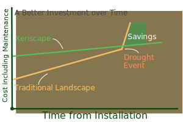

A well designed landscape maximizes the beauty and enjoyment of the property while it provides for the necessary and desirable functions; all tailored to the needs/tastes of the client. In today’s home/business turnover resale value of a property that is landscaped well is enhanced. A quality landscape looks finished. Decisions for function and utility have been made in an attractive and appealing way that makes an impression and/or statement to the people experiencing it or about the people owning it. A well designed and implemented landscape reduces maintenance costs; making a home less costly to use and a business more profitable to operate.
At Hill Country Gardens, we value service. We love beautifying the outdoors, and we want to be just a little more than simply "contractors" to our customers, we want to feel a little like partners. This feeling starts with the estimates that we make. We don't settle for "quotes" that lead to bickering as the job progresses, but we plan together with our customers to make a plan that can change as things come together.
Service in Estimates. As we make our estimates, we use our extensive experience of Hill Country plants and climate to come up with designs that will beautify and survive in the highly changeable climate here. We grew up in Fredericksburg, and we studied Horticulture in Texas, so we understand deeply the plants and designs that will thrive and endure here.
Service in Materials and Planning. As we plan jobs based on our estimates, we work with the best suppliers to get healthy plants and top quality materials. Materials matter, especially because soil and surrounding conditions matter, and different plants do better in different environments.
Here is one place where a quote is too rigid. It is hard to know in advance what plants will be the absolute best, and we are passionate about finding the best. Once we are into the job, we often make adjustments based on what we find. These adjustments don't mean you are writing a blank check, but that you are teaming with us to fit the very best landscaping for the dollar you can get with us.
Service in Execution. As we execute the jobs, we use our team, who in some cases are almost like family. Our teams have all been working together for a long time, and their extensive experience can help fix problems before they become too large, as well as getting work done timely, and cost effectively.
Service in Follow Through. Once our paid work is finished, the plants themselves start "working." As they grow and adapt, there may be adjustments that need to be made. We are committed to offering service as needed to make sure the initial vision turns into beauty that lasts.
Quality Estimates, planning, execution, and service. If you want lasting beauty in the outdoors around your home or business, let us make you an estimate. You won't be disappointed.
While we do all sorts of exterior landscaping work, our specialty is xeriscaping. This word, which sounds like "zero-scaping," Comes from the Greek word for "dry". The Hill Country is technically a semi-arid area, and we regularly have multi-year droughts or dry spells. Many landscaping choices that work well further East in Texas fail here, or require a lot of irrigation to keep them working.
Governments and communities are growing more and more conscious of water usage, and irrigation water may, at some time in the future, be unavailable at any price. Or, it might grow so expensive that it is cheaper to start over with landscaping than to keep the current plants alive.
The concepts of Xeriscaping involve using native plants which have adapted to the local climate. Many of them can go dormant or stay alive with very little watering when droughts come. And, when they are arranged properly, a design can provide visual interest all year round, by having plants which flourish in the widely different conditions that occur throughout the year here.
Xeriscaping isn't easy. It is more than simply using a certain kind of plants, but it requires planning with the soil type, drainage conditions, and sunlight in different locations. This is one reason why it's our specialty: we have lived here our entire lives, and spent much of that time outdoors, observing how native plants thrive at different times and in different conditions. Our knowledge can benefit you and beautify your life.
If you don't think about landscaping most of the time (and most people don't), you might fall into the trap of looking at landscaping as an expense along the way to finishing a project, such as a house or a new business. Like the house itself, though, landscaping reflects decisions that will be with you, hopefully for years. What's more, no outdoor landscape will look good without care and maintenance, and giving thought to how much time and money you want to spend is worth it up front.
Although we don't do maintenance (mowing, etc.) work any longer, for years we did. So we understand very well how a good job up front can improve the expense of and difficulty of maintenance. We strive for work that will look the best with relatively less paid in ongoing maintenance, both watering and trimming.

Consider two similar approaches to a yard. In one case, the owner decides to go with inexpensive plants and techniques, and in the other case, decides to go with xeriscaping. The second option is more expensive to install. It requires more planning, more expensive materials, and more labor. If you think of this choice as one of "expense," the choice is easy.
In the longer run, though, using high-water plants and grasses ends up needing more water, and often more maintenance, than xeriscaping does. Those costs increase year after year. And, in the case of a prolonged drought, it may not be possible to save the landscape, and the owner is back to square one.
Thinking of landscaping as an investment can save you money in the long run. Besides being easier to maintain, it may also be the smart money choice.
We don't normally do "quotes". A quote is a fixed bid: a promise to do a job for an exact amount of money. It is very common in business, but unless your legal situation requires it (and let us know if it does), then we will give you an estimate instead.
An estimate has a price on it, but the price can change. A quote has a price that will only be changed if renegotiation occurs.
An estimate reflects the bidder's best prediction of what the cost will be. A quote almost always has "padding" in it to protect the bidder. If things go well, the bidder pockets the difference.
An estimate can be adjusted, up or down, if once the work begins, needs or situations change. A bid is something both parties agree to live with.
An estimate works best when the parties trust each other. A quote works the best when the parties are each haggling for the best "deal".
We prefer being straightforward and focusing on great service than to playing games with prices and haggling. Not all landscapers are like us. You should make your choice accordingly.
If you are reading this, you are probably thinking about having some landscaping done in the Fredericksburg area. If you are, we hope you will contact us. Use the website or Facebook to get our contact information and let us know how we can help!
If you do contact us, we will talk to you about your requirements. If appropriate, we will put together an estimate (not a quote) of the work we can do for you. It should help a lot in figuring out what could work, and how much it will cost. If necessary, we will work with you to make adjustments. Then, when you are ready, we will schedule the work.
The scheduling depends on our team availability. We do our best to operate on a "first-come, first-served" basis, but we can make exceptions in exceptional cases. We will give you, as with the estimate, our best thoughts about when work will start and complete. If the job is large, we will discuss payment schedules as part of this. In the landscaping business, we are often hostage to the weather, so a firm schedule is hard to achieve. But in line with our commitment to service, we will do our best to keep you informed.
Once work is finished, we will do a final walk through with you to make sure you are happy with the work. We will also be happy to discuss with you how to maintain your landscaping to keep it beautiful for years to come.
Jeff, our founder, grew up in Fredericksburg and lived here nearly all his life
Jeff studied Horticulture at Texas Tech and spent a few years in Michigan learning the nursery business.
We prefer to like our customers, and have a trust relationship with them.
We have a passion for responsible stewardship of the environment.
We never charge for estimates.
We do our best to treat our workers well and strive to give anyone who is willing to work hard a chance.
We have done almost a thousand landscaping projects in Gillespie County since we've opened our doors.
Last year alone we did almost 60 projects.
Even in our spare time, we love the outdoors. We have helped with community gardens at our church and have sold at farmers' markets over the years.
90% of our customers stay in touch with us after we are finished.